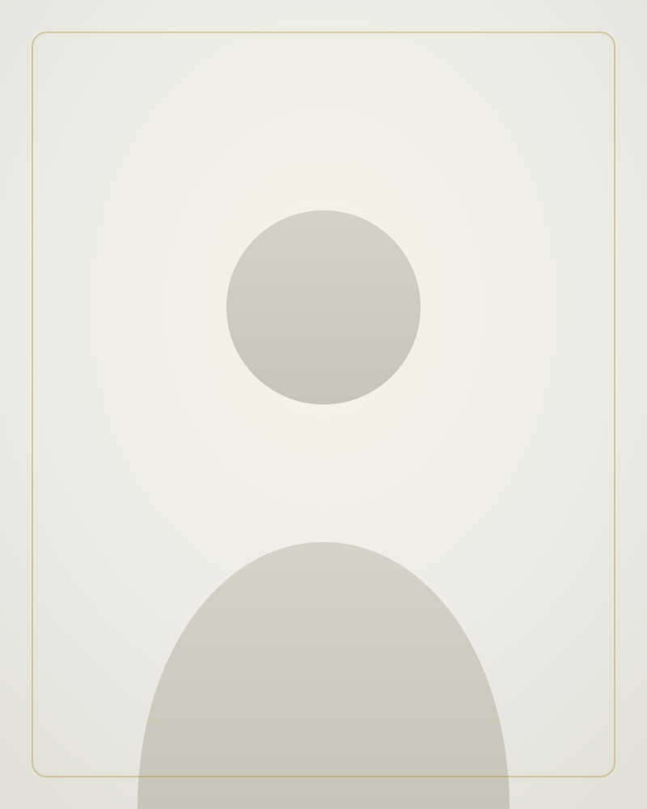

Femenino · Sub-20 Perfil de ejemploMediocentro defensivo · Mediocentro
Video con las mejores jugadas, ficha técnica y trayectoria de cada jugador.
3 jugadores

Femenino · Sub-20 Perfil de ejemploMediocentro defensivo · Mediocentro
Delantera · Extrema izquierda
Portero
Ningún jugador coincide con estos filtros.